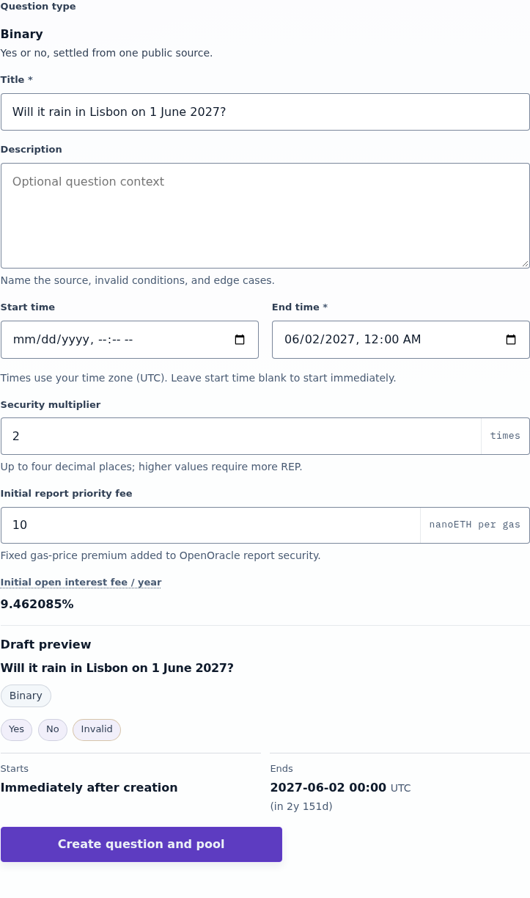
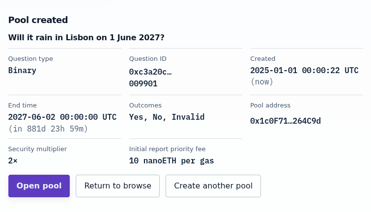
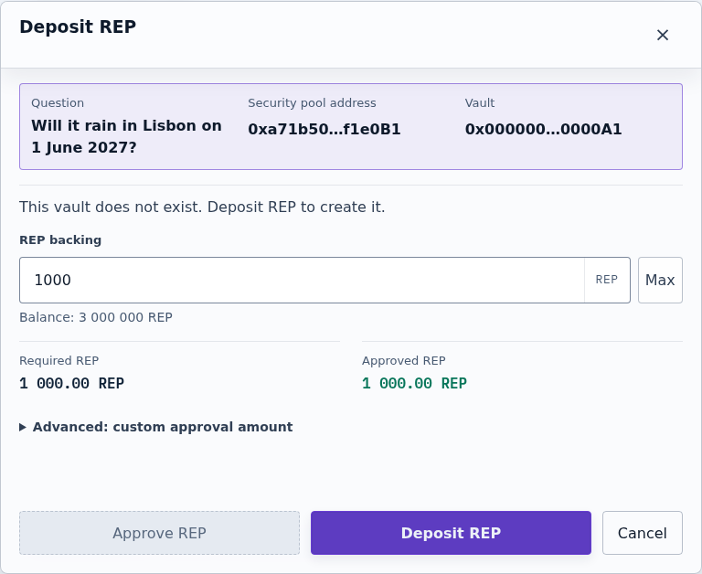
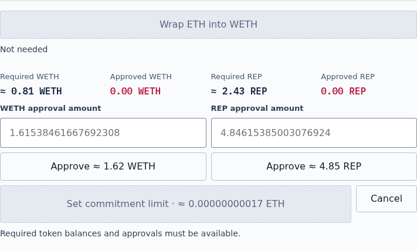
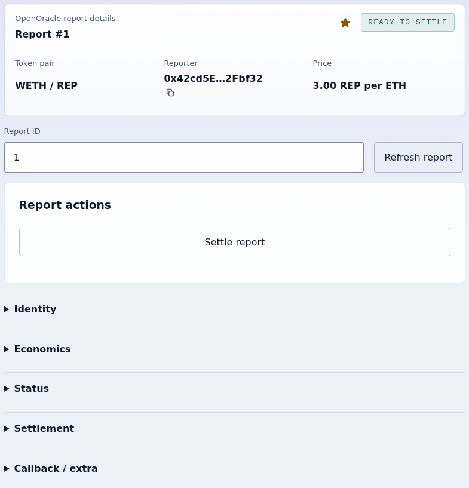
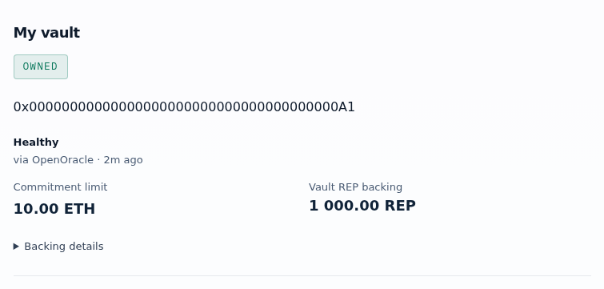
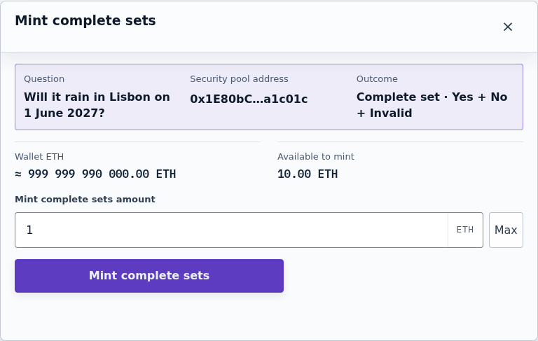
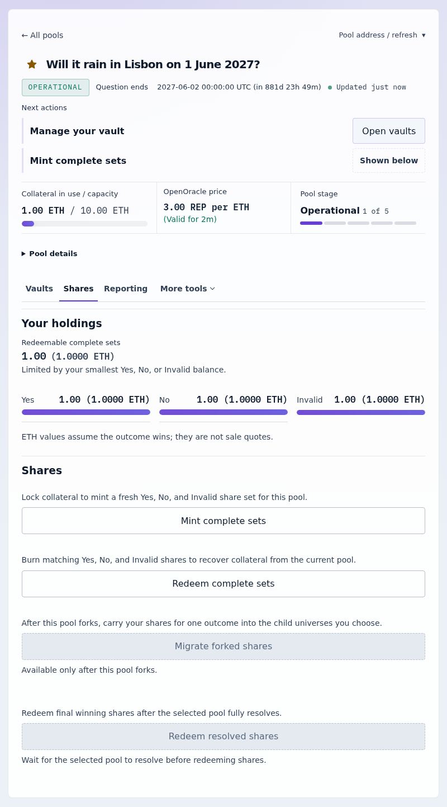

Tutorial
Your first security pool
You will create a yes-or-no question and its SecurityPool, back the pool with 1,000 REP, commit to underwrite 10 ETH of it, and mint the pool's first complete set. At the end the pool shows 1 ETH of open interest against a 10 ETH commitment.
Before you start
Statoblast is the market layer built on Zoltar, the forkable oracle: a SecurityPool holds the ETH behind one question's outcome shares, and vault owners back it with REP. How Statoblast works explains the model; this tutorial only walks through it.
Run bun run app:serve:statoblast and open http://localhost:12347/?simulate=1&simScenario=deployed. That browser-local simulator has the contracts deployed, no pools yet, and a wallet holding ETH and REP; the screenshots below come from it. It never reflects live chain state.
Create the question and pool
- Select Create pool. Keep Create a new question and the Binary question type.
- Enter a Title, for example
Will it rain in Lisbon on 1 June 2027?, and an End time after the event. Leave Security multiplier at 2 and Initial report priority fee at 10. - Select Create question and pool and confirm the transaction.

The confirmation card lists the new question and pool. Select Open pool.

Back the pool with REP
- On the pool page, under Vault actions, select Deposit REP.
- Enter
1000in REP backing, select Approve 1k REP, and confirm the approval. - When Approved REP reads 1 000.00 REP, select Deposit REP and confirm. The deposit creates your vault.

Commit to underwrite
REP alone does not let the pool take collateral. Your underwriting commitment is the ETH amount you agree to cover, and raising it needs a valid REP/ETH price from OpenOracle. A new pool has no price yet, so this first commitment requests one.
- Select Set commitment limit.
- Enter
3in OpenOracle REP per ETH starting price. On a live network, Fetch from Uniswap fills in a market price; the simulator has no Uniswap pricing. - Enter
10in Commitment limit. The form prepares the funding requirements and keeps the send button disabled until they are met. - Approve WETH and REP with their separate buttons. Each approval has an editable amount; use the suggested amounts for this tutorial.
- Select Set commitment limit (the button also shows the ETH it sends) and confirm that transaction. It funds a new price report and stages your change; the vault shows it as a staged operation.

Settle the price report
The report can be settled once it has stood unchallenged for eight minutes, and your staged change runs when it settles. The change expires a few minutes after the report becomes settleable, so settle promptly; an expired change must be staged again.
- In the simulator, select Show details in the banner, open QA controls, prices, and time travel, and select +10 min. On a live network, wait instead.
- On the pool page, select View report next to the OpenOracle price.
- When the page says Ready to settle, select Settle report and confirm. Whoever settles collects the report's settlement bounty.

Return to the pool with the browser's Back button. Under My vault, Commitment limit now reads 10.00 ETH and the staged operation reads EXECUTED.

Mint a complete set
- Select Open shares, then Mint complete sets.
- Enter
1in Mint complete sets amount, select Mint complete sets, and confirm.

Your wallet now holds the new Yes, No, and Invalid shares, and the pool summary's Open interest / commitment reads 1.00 ETH / 10.00 ETH. That is the whole underwriting loop: back a pool, commit capacity, and let collateral in. Open-interest fees explains what your commitment earns, and Your first Trading market opens a market for a pool like this one.
